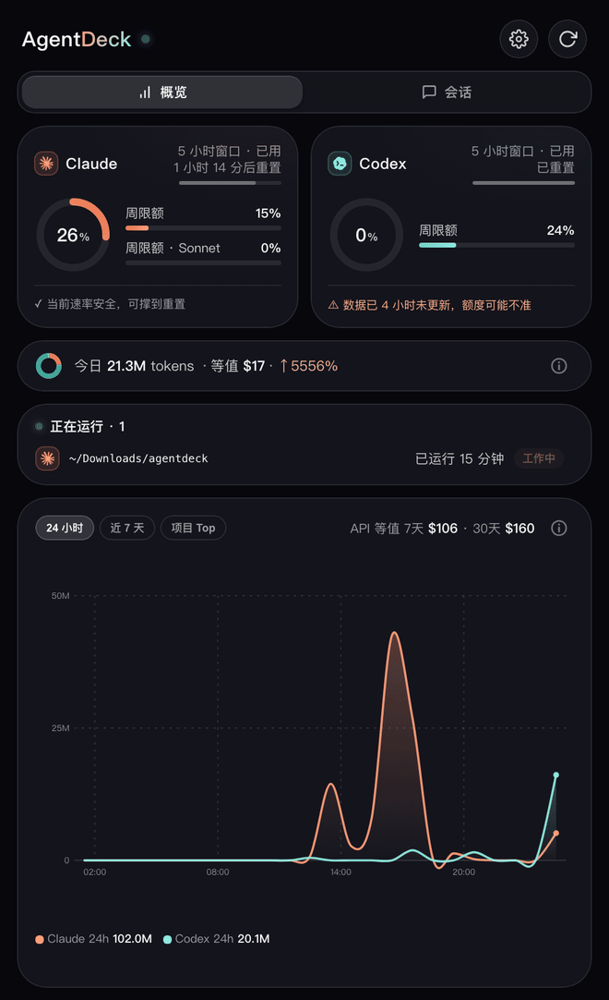

纯标准库 Python daemon + 原生 SwiftUI 界面，没有 Node、没有 Electron、没有打包器。
Claude 5h/7d 窗口与 Codex rate limits 实时聚合，菜单栏常显百分比，临界自动告警。
自动识别会话所在终端（iTerm、Warp、Ghostty、VS Code 等任意终端），点一下直达现场。
按模型 / 项目统计 token 与等值美元，24 小时曲线、今日摘要、7 天项目榜。
简体中文 / English / 日本語，默认跟随系统，设置内即时切换，三层界面文案统一。
检测到运行中的会话自动防休眠防断网，长任务不再因合盖断流，空闲即释放。
桌面层玻璃小窗常驻额度概览，连续曲率圆角与渐变描边，对标系统小组件质感。
全程本机处理，零遥测、零上报。出站请求只有两条，都可关。
克隆即编译，swift build 直出原生 App；也可以去 Releases 直接下 DMG。